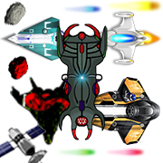
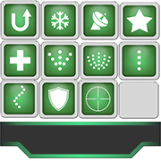
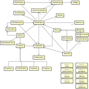

Starfighter 4K Github Poster
Shoot 'em up game utilizing motion recognition with Kinect and Wiimotes for spaceship movement, inclination, and shooting.
C++, Qt, OpenCV, Kinect SDK, Wiimotes API
This project has been divided into two parts: in the first one, we developed a complete shoot-'em-up game. In the second part, we integrated movement recognition using Kinect and utilized Wiimotes for inclination and shooting. The game takes place in space, where the objective is to destroy the other spaceships. Players navigate in a dynamic environment where various obstacles can appear, such as supernovas, asteroids, mother spaceships, and enemy squads. Satellites may emerge, providing bonuses to players who destroy them. These bonuses can include life/shield regeneration, new types of projectiles, or increased speed. Initially, players can choose their spaceship, each with specific characteristics. Subsequently, they can select a superpower that can be triggered at their discretion once it is reloaded.
The Project
New way to play
Utilizing the keyboard to maneuver the spaceship and initiate various actions constitutes the fundamental gameplay in a game. However, we desired to embark on a distinctive approach! We opted to project the game onto a wall using a projector and employed hand recognition via Kinect to determine the spaceship's position. Additionally, we utilized a Wiimote to control the spaceship's orientation and execute actions like activating bonuses or shooting.
 A dynamic environment
Players evolve in a dynamic environment where they may encounter obstacles like asteroids, satellites containing bonuses, or enemy spaceships. All these elements compel the players to move and react swiftly to avoid destruction, while simultaneously being targeted by the adversary's shots. The bonuses can assist the player in various ways, such as obtaining a new type of projectile, acquiring a shield, or interacting with the environment, such as reversing gravity, and more.
Advanced specification and design
Taking time to design the application and explain the technical specifications is very important in a project. It might take some time and can be frustrating to perform this step, but it ultimately saves time and prevents problems during development. In this project, the entire process took approximately 50% of the total project time, and we encountered no issues during development
Miscellaneous
| Type | Course project |
| Degree | B.Sc. HE-Arc, 3rd year |
| Course | Summer project |
| Duration | ~100 hours |
| Supervisor | Prof. Aïcha Rizzotti, Prof. Olivier Hüsser |
| Co-developers | Alexandre Perez, Sébastien Vauchez |